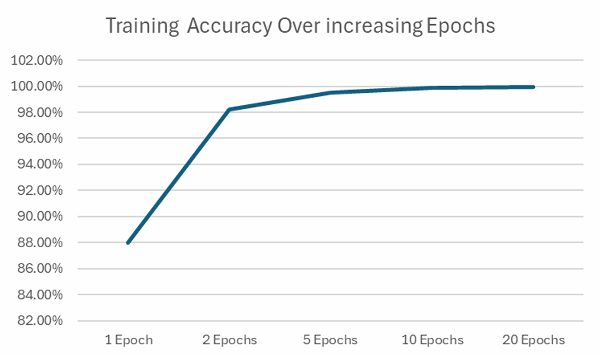

Research Question
How effectively can Artificial Intelligence improve cancer detection, diagnosis, and treatment?
Research Hypothesis
If AI is able to be actively implemented in healthcare settings in conjunction with doctors, then it has the potential to greatly improve accuracy in detecting cancer.
Thesis
While regulatory and implementation barriers remain, the integration of artificial intelligence into the field of oncology can be leveraged to effectively transform cancer detection, diagnosis, and treatment by operating as an efficient tool that is able to assist humans.
Secondary Research
Annotated Bibliography
Completed Secondary Research through the analysis of other Research Papers
Presentation
Presented summary of secondary research to Mrs. Rhee's AOOD class in December
Primary Research
Experiment
To test the viability of AI in oncology diagnosis, particularly with tumors located in the brain, a Convolutional Neural Network (CNN) was trained to classify 7,200 brain tumor MRIs across four categories. The experiment measured how training depth, measured in the number of epochs that the model was trained on, impacted accuracy on unseen data. The results showed a steep improvement curve: while a single training epoch yielded an unreliable accuracy, the model rapidly scaled to 98.37% at two epochs and reached 100% accuracy by twenty epochs. The data confirms that with thorough training, CNNs can successfully generalize data and accurately diagnose radiographic scans without overfitting.

Training accuracy percentages mapping progress from 1 to 20 epochs.
Interviews
Conducted an interview with Medical Physicist Dr. Kai Ding.
“The good thing is that in every process of our clinical workflow, we have a human in the loop. When we find a missing piece or an error from the AI contouring software, we will change it ourselves and make the necessary corrections.”
Synthesis Paper
Completed a synthesis paper that is a culmination of my work and research throughout the 2025-2026 school year.